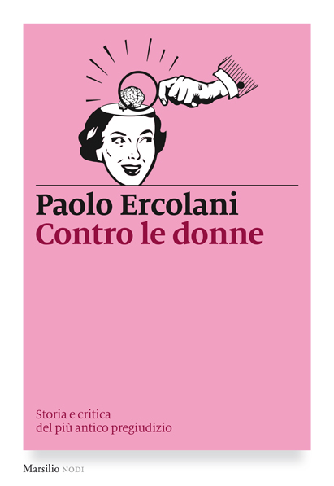
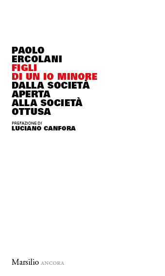
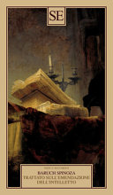
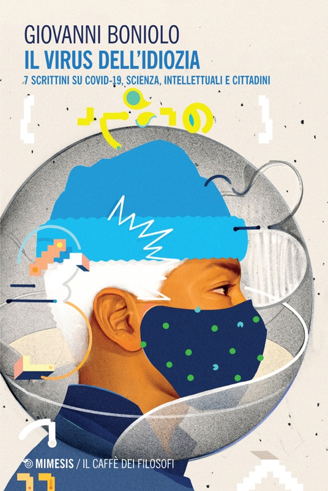
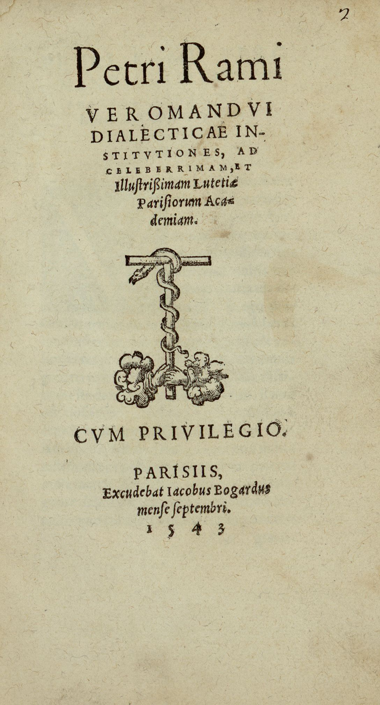

1:16:29 · 15 OPERE
Alla ricerca di scienza e decenza: la caciara vs. la parola sensata.
Il filo del discorso
Il contributo è dedicato alla memoria di Giuseppe De Donno e prende posizione contro il tono con cui il relatore ritiene sia stata trattata la sua scomparsa. Da questa apertura passa alla controversia suscitata dalla breve nota sul green pass firmata da Giorgio Agamben e Massimo Cacciari nel luglio 2021. Pur condividendone la critica politica, giudica tardivo e insufficiente l’intervento dei due filosofi rispetto alla gravità che attribuisce alla situazione. La parte più ampia esamina le risposte di Massimo Recalcati, Paolo Ercolani e Giovanni Boniolo. Il relatore contesta il collegamento automatico fra critica delle misure sanitarie, ostilità alla democrazia e rifiuto della scienza. Nei testi cerca ambiguità linguistiche, generalizzazioni, richiami all’autorità e attacchi alle persone; sostiene che il prestigio accademico non possa sostituire l’argomentazione. Il suo stesso commento impiega però molte espressioni personali e sarcastiche, registrate come giudizi polemici e non come accertamenti sulla competenza o sulla salute mentale degli autori. La discussione di Ercolani ruota attorno al significato di discriminazione, alla comparazione fra vaccinazioni differenti e alle analogie storiche usate per valutare i provvedimenti contemporanei. Il relatore richiama Keynes e interviene sulla storia delle guerre mondiali; le note correggono le sovrapposizioni cronologiche e distinguono valutazioni politiche e dati documentati. La lettura di Boniolo apre invece questioni di logica, definizione dei concetti, uso dell’entimema e rapporto fra sperimentazione clinica e autorizzazione dei vaccini. Il relatore oppone alle posizioni criticate una serie di studiosi dissenzienti e il libro di Lütge ed Esfeld sulla libertà, senza svolgere una revisione sistematica delle prove mediche. Seguono una polemica contro l’uso della peer review come segno di prestigio e il confronto con alcune pubblicazioni di Boniolo, dalle rappresentazioni scientifiche al rapporto fra sport e filosofia. Il relatore difende il confronto delle ragioni rispetto alla quantità di scritti o ai titoli professionali e richiama Kant e Pietro Ramo per discutere la facoltà di giudizio. La chiusura torna al linguaggio pubblico: un titolo sulle misure di Kadyrov e un aneddoto su Hitler sono utilizzati per mettere in guardia contro la trasformazione del dissenso in un difetto da correggere con la forza. Sono analogie dell’autore, non equivalenze storiche dimostrate o diagnosi collettive. Il ricordo finale di De Donno riporta il discorso al tema della dignità nel confronto pubblico.
I libri nel discorso
Gli ideologici, i filosofici e i salutisti: viaggio nella mente del popolo no vax
Fotografia editoriale dell’articolo, manifestazione a Roma: Fotografia editoriale dell’articolo, manifestazione a Roma
Fotografia di franceschi pubblicata nella pagina specifica dell’articolo; non copertina di un libro, non facsimile del testo e non ritratto dell’autore.
riconoscimento_vocale_locale
Passaggio 12:30 ↗ · Fonti e libro ↗
Head (Blackadder II, episodio2)
Identificazione probabile
Fotografia dell’episodio BBC,1986: Fotografia ufficiale BBC dell’episodio Head, prima trasmissione16gennaio1986. Da sinistra Miranda Richardson come ElisabettaI, Rowan Atkinson come Edmund Blackadder e Patsy Byrne come Nursie. Immagine acquisita dalla scheda Apple TV, non copertina di un libro e non la inquadratura della battuta sui fagioli.
Fotografia ufficiale della scena a corte, corrispondente alla didascalia BBC. Non mostra Baldrick mentre conta. La scena non è dell’episodio del dizionario della terza serie.
riconoscimento_vocale_locale
Passaggio 18:44 ↗ · Fonti e libro ↗
Contro le donne. Storia e critica del più antico pregiudizio
Copertina Marsilio Nodi, 2016: Copertina Marsilio Nodi, 2016
Immagine ufficiale Marsilio, ISBN 9788831724241. Stessa opera nominata; esemplare specifico mostrato nel video non verificato.
riconoscimento_vocale_locale
Passaggio 23:31 ↗ · Fonti e libro ↗
Figli di un io minore. Dalla società aperta alla società ottusa
Copertina Marsilio Ancora, 2019: Copertina Marsilio Ancora, 2019
Copertina editoriale della stessa opera, con ruolo di Canfora esplicitato. Edizione del video non identificata oltre il titolo.
riconoscimento_vocale_locale
Passaggio 24:19 ↗ · Fonti e libro ↗
Le conseguenze economiche della pace
Copertina: Adelphi · L’oceano delle storie · 2007 · traduzione di Franco Salvatorelli
Immagine autentica dell’opera, controllata visivamente; l’edizione di riferimento non è attribuita al filmato.
riconoscimento_vocale_locale
Passaggio 34:23 ↗ · Fonti e libro ↗
Critica della ragione pura
Copertina: Adelphi · Gli Adelphi 85, 1995 · traduzione e cura Giorgio Colli
Immagine autentica dell’opera, controllata visivamente; l’edizione di riferimento non è attribuita al filmato.
riconoscimento_vocale_locale
Passaggio 42:15 ↗ · Fonti e libro ↗Krisis. Saggio sulla crisi del pensiero negativo da Nietzsche a Wittgenstein
Frontespizio della terza edizione Feltrinelli, 1977: Frontespizio della terza edizione Feltrinelli, 1977
Google Books serve come immagine del record il frontespizio, non la copertina esterna: terza edizione 1977 dell’opera del 1976, esemplare University of Virginia. Distinzione dichiarata, nessuna copertina simulata.
riconoscimento_vocale_locale
Passaggio 43:22 ↗ · Fonti e libro ↗Adults in the Room: My Battle with Europe’s Deep Establishment
Identificazione probabile
Copertina: Vintage Digital, 4 maggio 2017, edizione elettronica, ISBN 9781473547827. Copertina inglese di riferimento; non attribuita al volume del relatore.
Immagine autentica dell’opera, controllata visivamente; l’edizione di riferimento non è attribuita al filmato.
riconoscimento_vocale_locale
Passaggio 47:49 ↗ · Fonti e libro ↗
Trattato sull’emendazione dell’intelletto (Tractatus de intellectus emendatione)
Identificazione probabile
Copertina della raccolta SE curata da Enrico De Angelis: Copertina della raccolta SE curata da Enrico De Angelis
Copertina della raccolta SE che contiene anche Princìpi della filosofia cartesiana e Pensieri metafisici, ISBN 9788867236251. Il record Google Books riporta 2021, Braidense documenta lo stesso ISBN per una ristampa precedente: anno dell’esemplare nella miniatura non leggibile, quindi non certificato. Nessun altro record creato per il contenitore o per i due testi non citati.
riconoscimento_vocale_locale
Passaggio 53:32 ↗ · Fonti e libro ↗
Il virus dell’idiozia. 7 scrittini su Covid-19, scienza, intellettuali e cittadini
Copertina Mimesis dell’edizione digitale, 2021: Copertina Mimesis dell’edizione digitale, 2021
Copertina dell’ebook fornito da Mimesis / Edigita ad Apple Books, ISBN 9788857577869, distinto dall’ISBN cartaceo. Non ricostruzione né fotografia di altra opera.
riconoscimento_vocale_locale
Passaggio 1:00:27 ↗ · Fonti e libro ↗Und die Freiheit? Wie die Corona-Politik und der Missbrauch der Wissenschaft unsere offene Gesellschaft bedrohen
Copertina Riva dell’edizione tedesca, aprile 2021: Copertina Riva dell’edizione tedesca, aprile 2021
Immagine ufficiale del volume con due autori, ISBN 9783742319098; non viene inventata una traduzione italiana dal titolo tradotto oralmente.
riconoscimento_vocale_locale
Passaggio 1:00:48 ↗ · Fonti e libro ↗Le regole e il sudore. Divagazioni su sport e filosofia
Copertina Raffaello Cortina, 2013: Copertina Raffaello Cortina, 2013
Immagine ufficiale del volume del 2013, ISBN 9788860306159; nessuna diversa edizione dedotta dal video.
riconoscimento_vocale_locale
Passaggio 1:09:32 ↗ · Fonti e libro ↗
Problemi filosofici della scienza
Identificazione probabile
Foto parziale del volume mostrato, da fotogramma a 896 s; edizione non determinata: Fotogramma nativo intero del filmato La filosofia è scienza (e la scienza è filosofia), a 896 secondi: fotografia del volume effettivamente mostrato, con titolo Problemi Filosofici della Scienza e autore Dr Divago leggibili. La mano copre parte inferiore/destra della coperta e alcuni segnalibri sporgono. Immagine parziale del volume nel suo contesto, non copertina editoriale autonoma, frontespizio o ricostruzione grafica. Nessun editore, ISBN o anno è leggibile; edizione della copia non determinata.
2011 deriva dalla bibliografia dell’autore e dalla presentazione in un altro contributo, non da questo fotogramma. Il file mantiene l’intera inquadratura, il leggio e la lavagna; nessun ritaglio, raddrizzamento, ingrandimento, ritocco o completamento delle zone coperte.
A 4234,23 s il relatore dice quando scrivevo questo testo sui problemi filosofici della scienza; subito dopo richiama il libro di Boniolo On Scientific Representations e ne critica titolo e contenuto. L’autodescrizione coincide con il titolo di un’opera già riscontrata nella bibliografia di Dr Divago e sulla fotografia canonica del volume. La frase non formula un titolo esplicito e il collegamento resta redazionale probabile.
Passaggio 1:10:34 ↗ · Fonti e libro ↗On Scientific Representations: From Kant to a New Philosophy of Science
Copertina Palgrave Macmillan, edizione 2007: Copertina Palgrave Macmillan, edizione 2007
Copertina ufficiale associata al DOI e all’ISBN ebook 9780230206571. Il titolo ufficiale è On Scientific Representations, plurale; il video e alcuni riferimenti secondari usano il singolare.
riconoscimento_vocale_locale
Passaggio 1:10:41 ↗ · Fonti e libro ↗
Dialecticae institutiones
Frontespizio originale, Parigi, Jacques Bogard, settembre 1543: Frontespizio originale, Parigi, Jacques Bogard, settembre 1543
Frontespizio dell’esemplare Sorbona VCR 8=6514, pièce 2; non copertina esterna. Il link HTML ha un titolo accessorio erroneo Aristotelicae animadversiones: immagine e didascalia identificano inequivocabilmente Dialecticae institutiones. Scartata la diversa pagina delle Dialecticae partitiones.
riconoscimento_vocale_locale
Passaggio 1:11:35 ↗ · Fonti e libro ↗Minutaggi ricavati da testi automatici, da riascoltare. Le identificazioni probabili sono segnalate accanto ai libri.